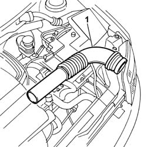

1048A21 filter input sleeve - r r
- Path
- Procedures > 10 ENGINE UNIT > 1048 ENGINE AIR SUPPLY CIRCUIT > 1048A vacuum air circuit > 1048A21 filter input sleeve - r r
- Kind
- repair procedure (removal / refitting; the operation number is the code)
- Applies to
- engines: 1.1, 1.2 8v; all production periods
- Interactive page
- https://sloeber94.github.io/elrnDB-fPnd/en/#/2752488
Applies to: engines: 1.1; all production periods
 Removing
Removing
 Refitting
Refitting1. Disconnect the hose from the air filter casing and from the cold air intake and remove it.

Applies to: engines: 1.2 8v; all production periods
Removing
Refitting1. Disconnect the hose from the air filter casing and from the cold air intake and remove it.
Applies to: engines: 1.1; all production periods
Refitting
RemovingFit the hose in place connecting it to the housing on the air filter casing and the housing on the cold air intake.
Applies to: engines: 1.2 8v; all production periods
Refitting
RemovingFit the hose in place connecting it to the housing on the air filter casing and the housing on the cold air intake.
Topics that link to this page (11)
- 1004B12 power unit with manual gearbox - r+r for versions with a/c
- 1020D38 flywheel side oil seal - replace
- 1024B12 engine flywheels rr for versions with manual gearbox and air contioner
- 1024B13 ENGINE FLYWHEEL - R.R. FOR MODELS WITH MECHANIC TRANSMISSION AND FOUR-WHEEL DRIVE
- 1810A20 clutch - r + r
- 1810A30 CLUTCH - R.R. FOR FOUR-WHEEL DRIVE MODELS
- 1820A19 THRUST BEARING CONTROL LEVERAGE - R.R. FOR FOUR-WHEEL DRIVE MODELS
- 2110A10 manual gearbox and differential - r + r
- 2110A16 MECHANICAL GEAR WITH DIFFERENTIAL - R.R. FOR 4X4 VERSIONS
- 7210A02 FRONT END ASSEMBLY RR
- 7210A18 FRONT CROSSMEMBER